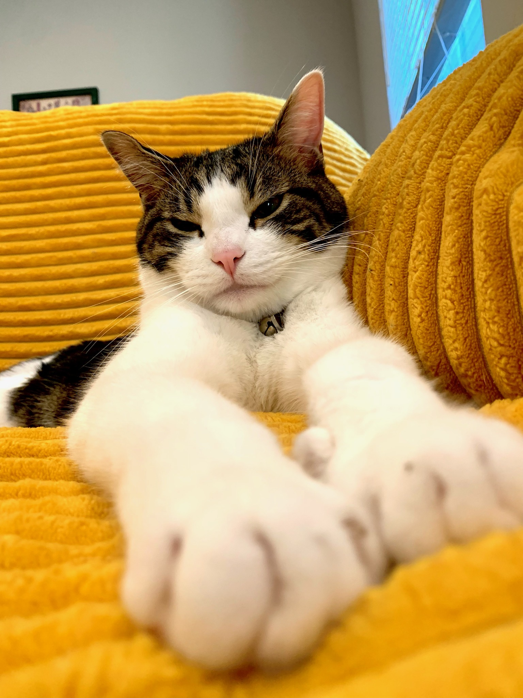
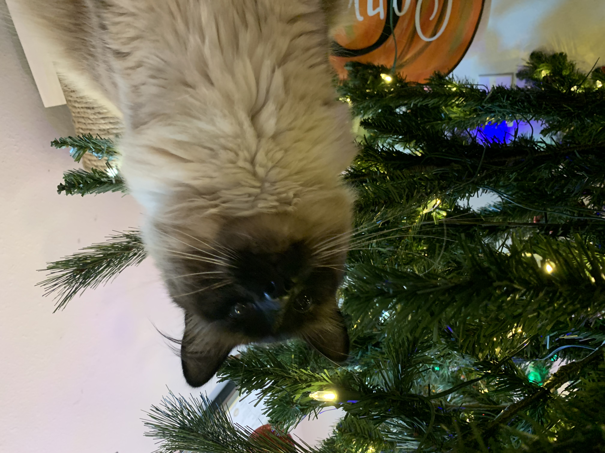
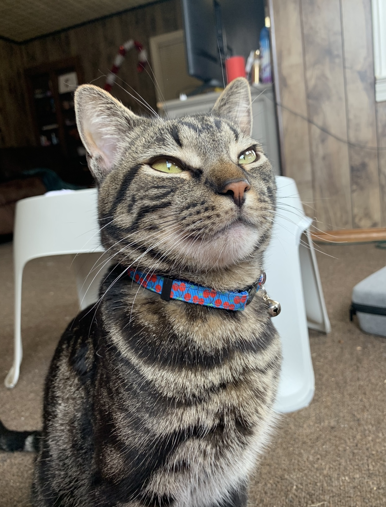

About
Home
Adopt your own Pets!
This page is all about my pets!
This website has some subtext that goes here under the main title. It's a smaller font and the color is lower contrast
Sign up to see more pictures of all my pets! They're good gatties and a good bog.
Sign Up
Let's Meet The Cats!
  
"Feed Me!"
"Pet Me!"
"*Licks lips"
Do you have any dogs?
Yes but he's terrifying...
Told you so
"I must shred every toy I own"